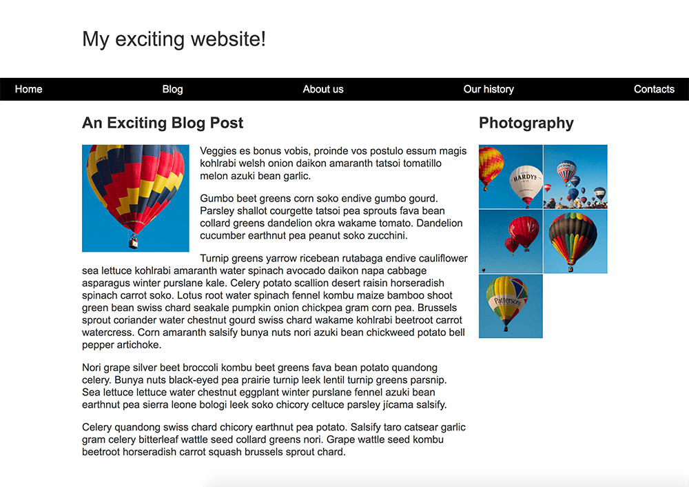
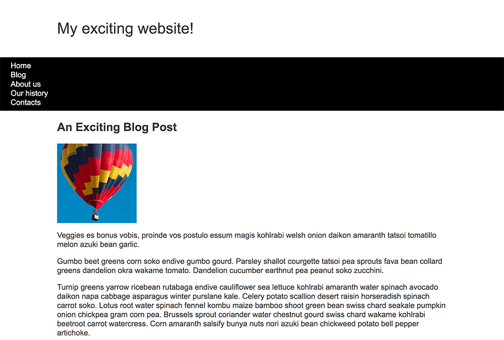

If you have worked through this module then you will have already covered the basics of what you need to know to do CSS layout today, and to work with older CSS as well. This task will test some of your knowledge by way of developing a simple webpage layout using a variety of techniques.
Note: You can try out solutions in the interactive editors below, however it may be helpful to download the code and use an online tool such as CodePen, jsFiddle, or Glitch to work on the tasks.
If you get stuck, then ask us for help — see the {{anch("Assessment or further help")}} section at the bottom of this page.
You have been provided with some raw HTML, basic CSS, and images — now you need to create a layout for the design, which should look just like the image below.

You can download the HTML, CSS, and a set of six images here.
Save the HTML document and stylesheet into a directory on your computer, and add the images into a folder named images. Opening the index.html file in a browser should give you a page with basic styling but no layout, which should look something like the image seen below.
This starting point has all of the content of your layout as displayed by the browser in normal flow.
If you don't want to work locally then using a tool such as CodePen or jsFiddle will work as well. You will need to upload the images using their Assets functionality and replace the value in the src attribute to point to the new image location.

You now need to implement your layout. The tasks you need to achieve are:
You will not need to edit the HTML in order to achieve this layout and the techniques you should use are:
There are a few ways in which you could achieve some of these tasks, and there often isn’t a single right or wrong way to do things. Try a few different approaches and see which works best. Make notes as you experiment.
You can practice these examples in the Interactive Editors mentioned above.
If you would like your work assessed, or are stuck and want to ask for help: